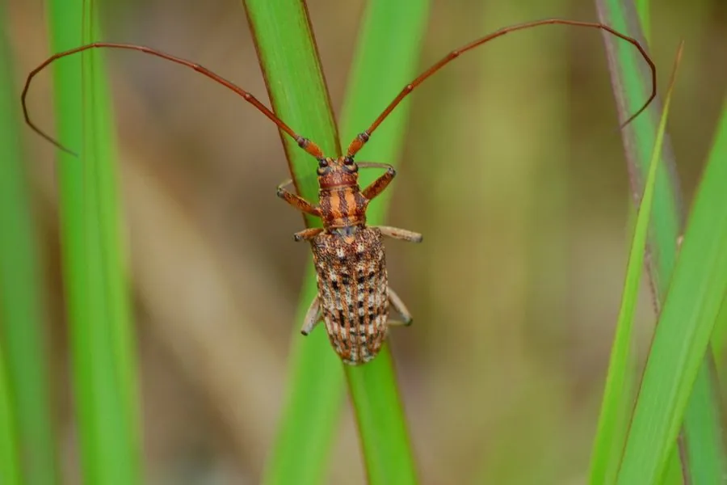

昆虫 · 动物界
松墨天牛 Monochamus alternatus

中国松林中的常见天牛，身体棕黑相间、触角很长，是松材线虫病的主要传播媒介，对松林危害极大。
- 分类
- 门节肢动物门纲昆虫纲目鞘翅目科天牛科属墨天牛属
- 栖息环境
- 中国及东亚的松林，尤其是马尾松、黑松等松树分布区
- 地理分布
- 中国南方和东部松林、日本、朝鲜半岛等地
- 保护级别
- IUCN 暂无评估；中国未列入国家重点保护名录
物种志
松墨天牛体长 1.5–3 厘米，身体呈棕褐色或黑褐色，鞘翅上有黄褐色与黑色相间的绒毛斑纹，形成不明显的小斑点；触角很长，雄虫触角长度可超过身体的两倍，雌虫约为一倍半。它爬行缓慢，受惊时发出吱吱声。
它分布于中国、日本、朝鲜半岛等东亚地区的松林，幼虫蛀食松树木质部，成虫取食松树嫩枝树皮。它一年发生 1 代，雌虫在松树树皮缝隙中产卵，幼虫孵化后蛀入木质部，在树皮下和木质部之间形成曲折的蛀道，破坏树木的输导组织。更重要的是，松墨天牛是松材线虫的主要传播媒介，松材线虫由它携带、在取食时传入健康松树，导致松树迅速枯死，被称为“松树的癌症”。防控松墨天牛是防治松材线虫病的关键，目前未被列入国家重点保护名录。
形态与习性
- 食性幼虫蛀食松树木质部，成虫取食嫩枝树皮
- 体长1.5–3 cm
- 寿命成虫约 1–2 个月，一年 1 代
- 繁殖雌虫在松树皮缝产卵，幼虫蛀入木质部
- 活动节律昼行性，夏季羽化活动
- 危害是松材线虫病的主要传播媒介，导致松树枯死
趣味知识
- 松墨天牛是松材线虫的主要传播媒介，被称为松林“癌症”的帮凶。
- 它的触角非常长，雄虫触角可超过身体长度的两倍。
- 幼虫在松树木质部蛀出曲折的隧道，会严重破坏树木的输导组织。